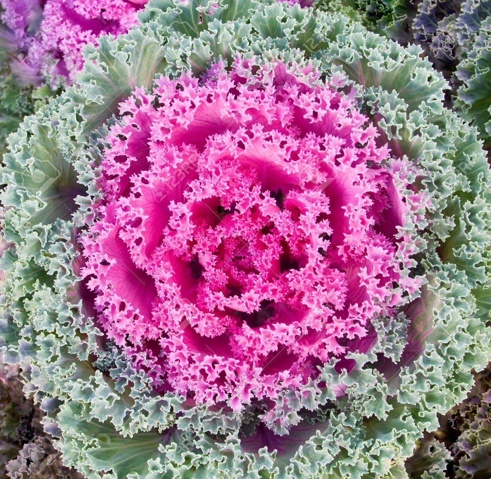
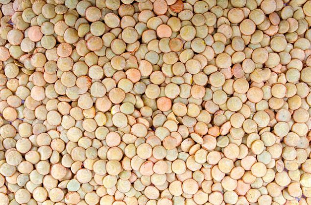

El medio ambiente nos brinda todo tipo de plantas.
Plantas Alimenticias
Son cultivos de frutas, cereales, legumbres, verduras y otros, que el ser humano utiliza para cubrir sus necesidades nutricionales.

Plantas ornamentales
Se cultiva y se comercializa con propósitos decorativos por sus características estéticas, como las flores, hojas, perfume, la peculiaridad de su follaje, frutos o tallos en jardines y diseños paisajísticos, como planta de interior o para flor cortada.
Plantas medicinales
Pueden emplearse en el tratamiento de una afección. Son utilizados en infusiones, ungüentos, cremas, comprimidos, cápsulas u otros formatos.
Plantas Madereras
De su tronco se extrae grandes trozos de madera. Los árboles madereros se clasifican en maderas blandas, semiduras y duras.
Girasol
Destinados a la ornamentación de parques y jardines. Algunos de estos girasoles son completamente rojos o con degradado naranja.
Patata
Ayuda a disminuir la presión arterial y prevenir enfermedades cardiovasculares.
Yuca
Las hojas jóvenes de la planta son buena fuente de proteínas dietéticas y vitamina K.
Platano
Rico en vitamina C, ayuda al cuerpo a desarrollar resistencia contra agentes infecciosos.

Lenteja
Son una buena fuente de hierro, que potencia el transporte de oxígeno a través del cuerpo.
Arce Japonés
Un pequeño árbol asiático que puede cultivarse en forma de bonsái.
Coleo
La hoja de esta planta es muy peculiar, con colores vistosos y alegres. Esta planta necesita mucha luz y agua.
Verbena
Esta planta ornamental de exterior hace una flor de cuatro colores dependiendo de su especie.
Lavanda
Se caracteriza por sus propiedades calmantes y su aceite beneficioso para la salud.
Áloe vera
Refrescante y cicatrizante.
Romero
Tiene propiedades anti-inflamatorias, sirve para combatir la caspa y repele los mosquitos entre muchas otras.
Manzanilla
Se utiliza para desórdenes digestivos o nerviosos y para ungüentos antiinflamatorios.
Abarco
Se usa para fabricar canastos y calzado, también en la construcción de canoas, botes y muebles, chapas decorativas y carrocería.
Cedro
Se utiliza sobre todo en muebles finos, embarcaciones, instrumentos musicales, canoas y esculturas. Se intenta, por todos los medios, prevenir su explotación.
Caoba
Se utiliza para trabajos de tornería, embarcaciones, instrumentos musicales, tallados.
Canelo
Es fuente de fibra, hierro y calcio. Utilizado como anestésico, también es un sustituto de la canela, para aromatizar alimentos.


{kind=link}
{kind=link}
{kind=link}
{kind=link}
{kind=link}
{kind=link}
{kind=link}
{kind=link}
{kind=link}
{kind=link}
{kind=link}
{kind=link}
{kind=link}
{kind=link}
{kind=link}
{kind=link}